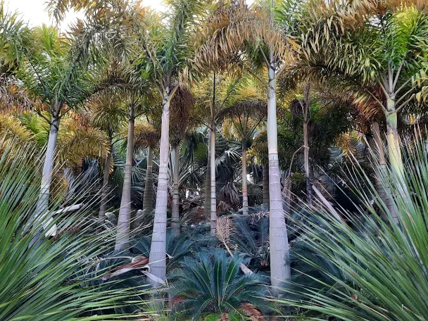
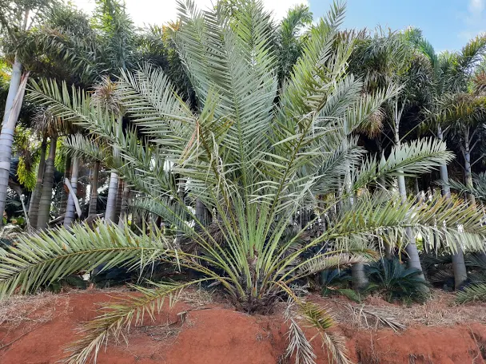
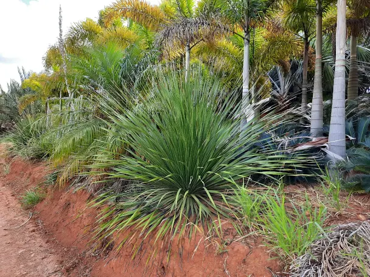

Palmeira Rabo-de-Raposa
A partir de R$ 75.00 até R$ 500.00
Nome científico: Wodyetia bifurcata Nome Popular: Palmeira-rabo-de-raposa, Rabo-de-raposa. Porte Nossas Mudas: de 0,80m a 5,5m Atinge altura de: 6m a 9m Descrição geral: A palmeira-rabo-de-raposa é uma bela espécie australiana, muito usada no paisagismo brasileiro. Apresenta estipe único, cinzento, elegante, com diâmetro de cerca de 25 cm, anelado e em formato colunar ou de garrafa. Suas folhas são um espetáculo à parte e a peculiaridade que mais se destaca nesta palmeira. São grandes, verde-claras, arqueadas, pinadas e com numerosos folíolos que conferem aspecto plumoso de escova de garrafa, ou cauda de raposa, como o nome diz.
Quero Saber MaisPalmeira Tamareira Dactylifera
A partir de R$ 50.00 até R$ 3,000.00
Nome científico: Phoenix Dactylifera Nome Popular: Tamareira, Palmeira-Tamareira, Tamareira-dactylifera Porte Nossas Mudas: de 1,00m a 6,00m Atinge altura de: até 25m OBS: as mudas com TRONCO maior que 0,50m são vendidas por R$2.000,00 o metro do tronco (calcular) Descrição geral: A Tamareira uma palmeira extensivamente cultivada pelos seus frutos comestíveis, as tâmaras. Pelo fato de ser cultivada há milênios, a sua área natural de distribuição é desconhecida, mas seria originária dos oásis da zona desértica do norte de África, embora haja quem admita uma origem no sudoeste da Ásia. É uma palmeira de média dimensão, de 15 a 25 m de altura. As folhas tem até 3 m de comprimento, com pecíolo espinhoso. Uso recomendado no paisagismo de grandes espaços, por sua imponência.
Quero Saber MaisDasylirion wheeleri ou Daslirio
A partir de R$ 50.00 até R$ 300.00
Nome científico: Dasylirion wheeleri Nome Popular: Dasylirium, Daslirio, Dasylirio, Planta do Texas, Planta Mexicana Porte Nossas Mudas: de 0,70m a 1,50m Atinge altura de: 1,70m Descrição geral: Dasylirion wheeleri ( colher do deserto , flor de colher , sotol ou sotol comum ) é uma espécie de planta da família de aspargos Asparagaceae, nativa de ambientes áridos do norte do México, e deserto dos Estados Unidos, Texas. O Dasylirio é um arbusto perene de crescimento moderado a lento, com um único tronco não ramificado de até 40 cm de espessura e 1,5 m de altura, embora frequentemente recostado no chão. A lâmina da folha é delgada, de 35 a 100 cm de comprimento, verde-acinzentada, com uma margem dentada. As folhas irradiam do centro do ápice da planta em todas as direções (esféricas)
Quero Saber Mais